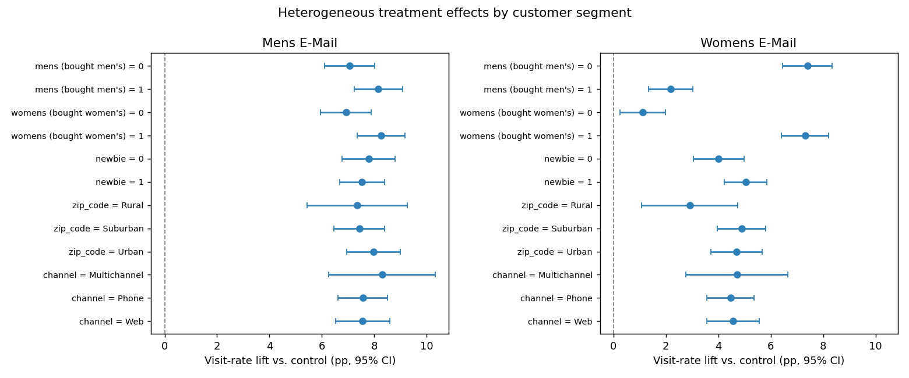
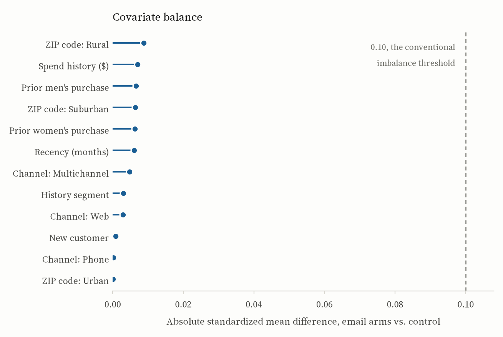
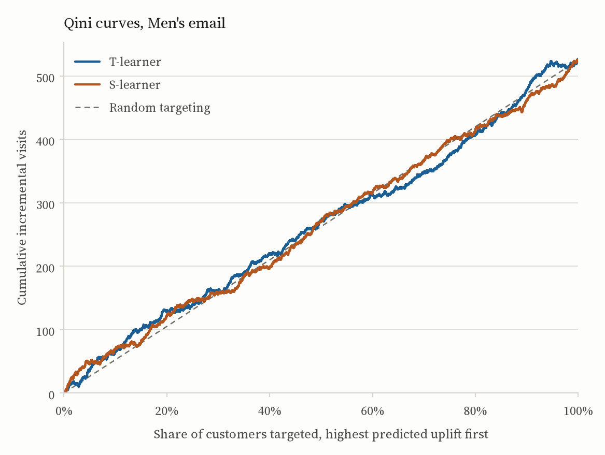
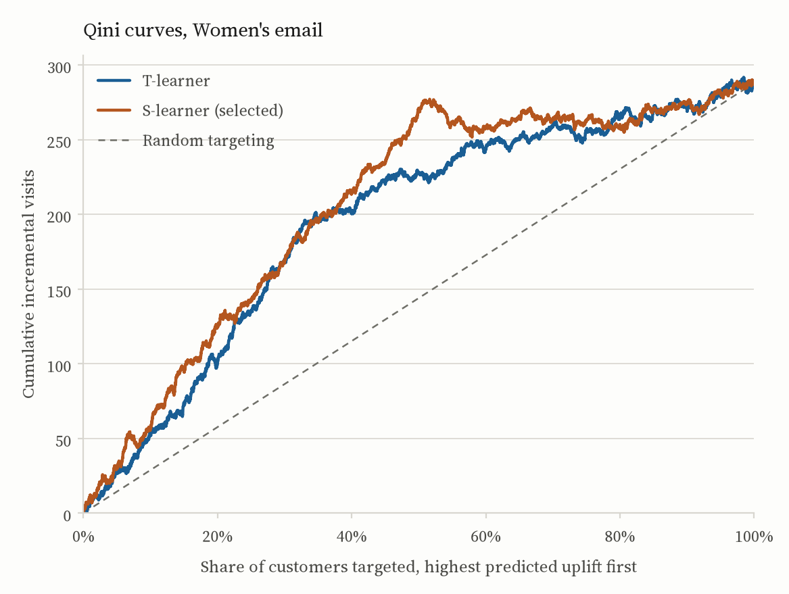
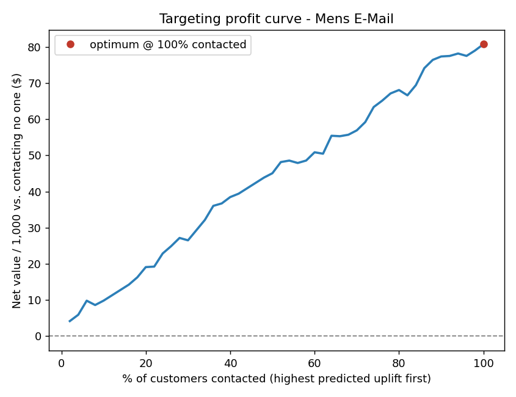
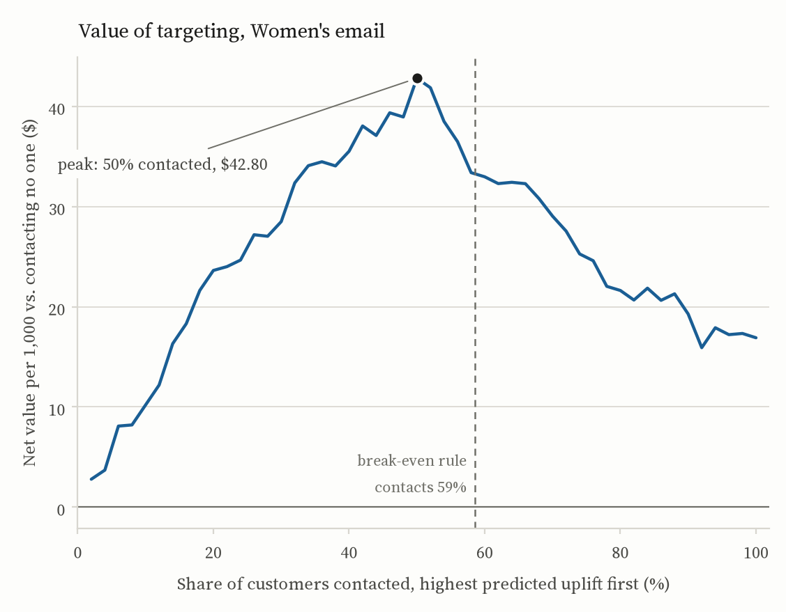
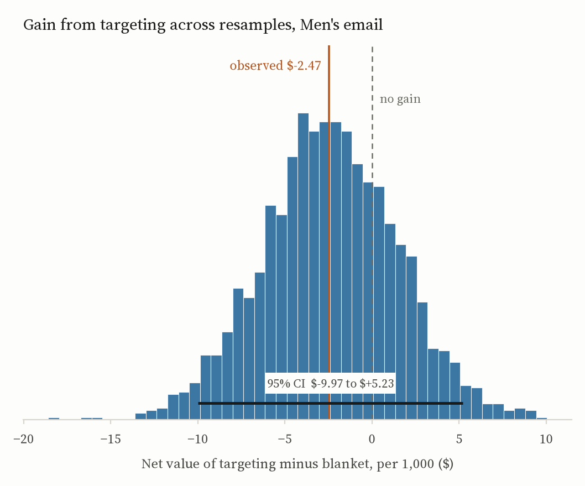
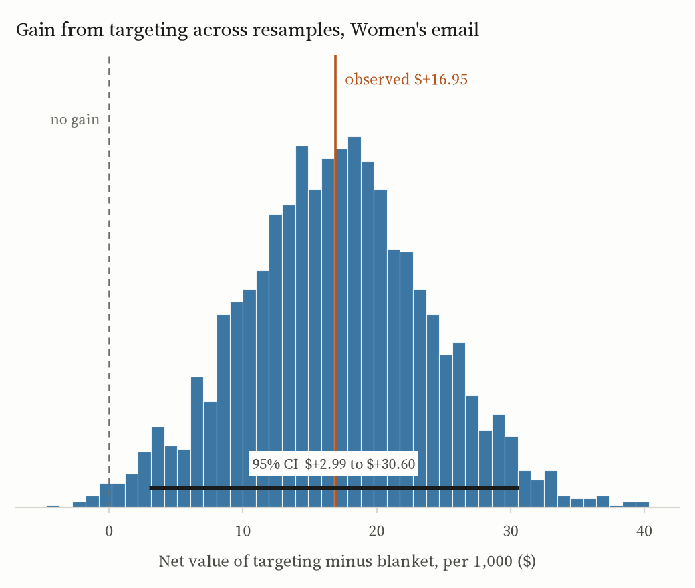
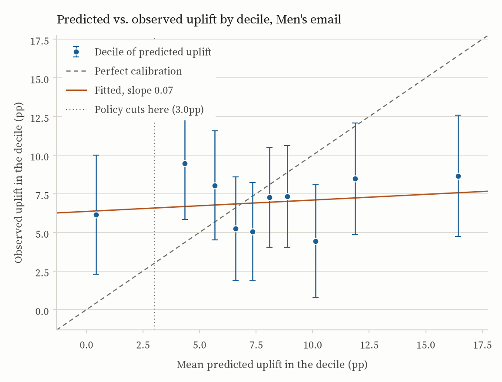
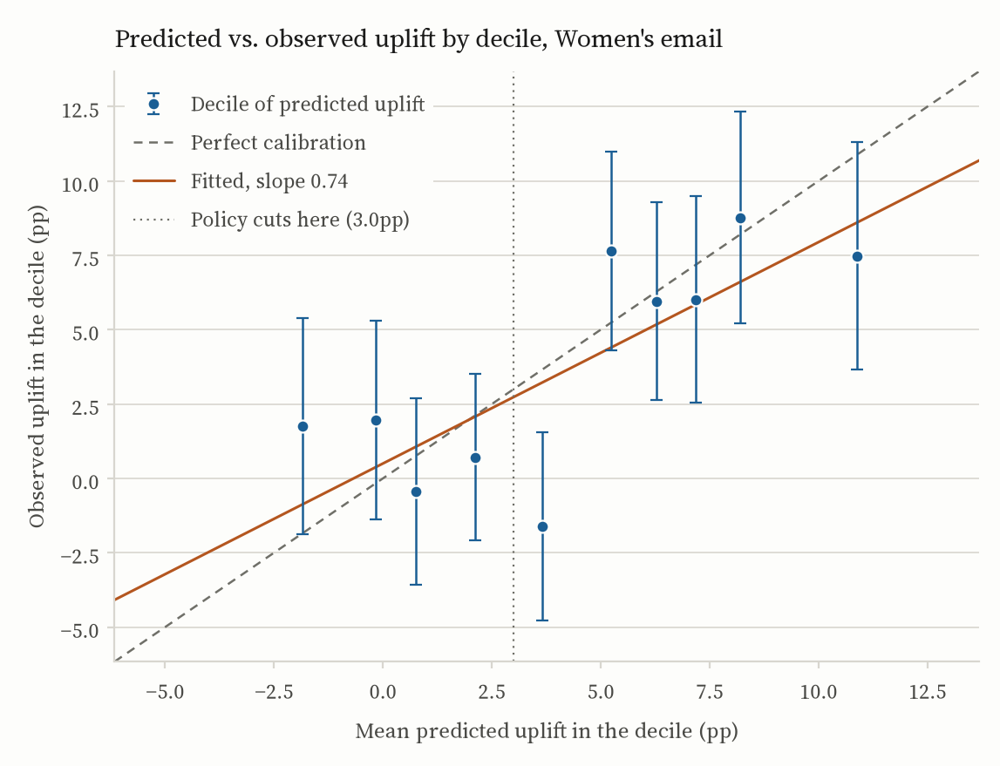

When Average Effects Lie
A routine email A/B test in which both treatments “work” on average — and in which the average, read straight, leads to the wrong decision for one of them.
The short version
A retailer emailed 64,000 customers. A third received an email featuring men’s merchandise, a third one featuring women’s, and a third nothing. Both emails lift website visits, and by the usual test both are unambiguous wins: the Men’s email by 7.66 percentage points, the Women’s by 4.52. The obvious playbook is to send both to everyone.
That would be right for one campaign and wrong for the other. The Women’s email’s 4.5-point average is two very different effects blended together. It lifts visits by 7.3 points among customers who have bought women’s merchandise before, and by 1.1 points among those who haven’t. The Men’s email has no such split; it lifts everyone by roughly the same amount. Same headline result, opposite policies.
| Campaign | Average lift in visits | Does it vary by customer? | Policy |
|---|---|---|---|
| Men’s email | +7.66 pp [7.00, 8.32] | No. No subgroup interaction survives multiple-testing correction. | Send it to everyone. |
| Women’s email | +4.52 pp [3.89, 5.16] | Yes. Treatment × prior women’s-merchandise purchase, p < 10−4. | Send it to the 59% a model says it moves; skip the rest. |
Under illustrative economics — a visit worth $2, a contact costing 6¢, so a contact pays for itself above a 3-point liftThe break-even lift is cost divided by value: $0.06 / $2 = 3 percentage points. Move either price and the threshold moves with it. But the qualitative call is the same for any break-even that sits between the Women’s email’s 1.1-point and 7.3-point segments, and every Men’s segment clears 6.9 points, so “broad for Men’s, selective for Women’s” survives a wide range of prices. — targeting the Women’s email returns $33.85 per 1,000 customers against $16.90 for sending it to all of them, while sending 415 fewer emails. The prices are assumptions. The shape of the answer is not.

The question
Which customers should receive which email next quarter, and who should stop being emailed at all? Most marketing datasets can’t answer that cleanly, because whoever got the email got it for a reason, and the reason is tangled up with the outcome. The Hillstrom MineThatData challenge (2008) can: it is a genuine randomized experiment, with 64,000 customers assigned 1:1:1 to the three arms, so the causal question doesn’t have to be assumed away before it can be asked.
The analysis that follows runs top to bottom in one script. Every number on this page is computed from the raw file; nothing is typed in by hand.
First, is the experiment trustworthy?

Randomization has to be checked, not assumed. The arms are 21,307, 21,387 and 21,306 customers. Across every pre-treatment covariate — recency, spend history, prior men’s and women’s purchases, newness, geography, acquisition channel — the largest standardized mean difference between an email arm and control is 0.009, against a conventional threshold of 0.10. An omnibus logistic test of whether the covariates jointly predict assignment gives p = 0.76.
Nothing about who received which email is predictable from who they were beforehand. So a difference in outcomes between arms is an effect of the email, and the rest of the analysis can take that for granted.
The average effect, and why it isn’t wrong
The primary outcome is a website visit in the two weeks after the send.Visit has the highest base rate of the three outcomes (14.7%), so it is the best-powered. Conversion (0.9%) and spend are reported in the full results, but a decision resting on the well-powered metric is a decision I can defend. Spend is zero-inflated and skewed, so its interval is bootstrapped rather than t-based. A plain difference in proportions, with Wald intervals:
| Campaign | Lift | 95% interval | p |
|---|---|---|---|
| Men’s email | +7.66 pp | [7.00, 8.32] | < 0.001 |
| Women’s email | +4.52 pp | [3.89, 5.16] | < 0.001 |
Regression adjustment with the Lin (2013) estimatorCovariates are centered and fully interacted with treatment, with HC1 standard errors. This is the covariate adjustment that cannot hurt: its variance is never larger than the unadjusted difference in means, and unlike a plain regression on treatment plus covariates it stays unbiased when effects differ across covariate values — which, it turns out, they do. leaves both point estimates essentially where they were and trims the sampling variance by about 3%. That is the expected signature of a clean randomization. Adjustment can sharpen the estimate; it should not move it, and it doesn’t.
Both are real, well-estimated effects, and nothing in this section is wrong. The problem is what it leaves out.
Where the average lies
Break each effect out by the customer’s pre-treatment characteristics and the Men’s email is dull in the best way: every segment lands between 6.9 and 8.3 points, and no treatment-by-covariate interaction survives correction for multiple testing. The Women’s email is not dull.
| Segment | Lift | Gap within the pair |
|---|---|---|
| Has bought women’s merchandise before | +7.31 pp | 6.20 pp |
| Has not | +1.11 pp | |
| Has bought men’s merchandise before | +2.18 pp | 5.22 pp |
| Has not | +7.40 pp |
Both interactions are large, 6.2 and 5.2 points; both have p < 10−4; both survive Benjamini–Hochberg control across every interaction tested. They are also one finding seen from two angles. The email moves people who already shop the women’s catalogue, and does little for people whose history is the men’s one.In the language of experimental psychology this is a textbook moderation effect: the treatment’s effect depends on a pre-existing trait. The quantity of interest is the treatment × covariate interaction, exactly as in a 2 × 2 factorial.
This is why the average is a trap here. At a 3-point break-even, contacting the 1.1-point segment loses money on every email sent, and contacting the 7.3-point segment makes money on every one. “Send to everyone” averages a good decision with a bad one and reports the blend as a win.
From an effect to a policy
Subgroup averages establish that targeting is worth doing. To decide whom to contact, I need a prediction, for each customer, of how much the email would move them in particular: an uplift model.An uplift model is not a response model. A response model predicts who will visit. An uplift model predicts who will visit because of the email: P(visit | email) − P(visit | no email). A loyal customer who visits regardless scores high on the first and near zero on the second, and emailing them is pure cost.
I fit two. A T-learner trains separate gradient-boosted models on the treated and control arms and takes uplift as their difference; an S-learner trains one model with treatment as a feature and takes uplift as the difference between its predictions with the flag on and off. Both are trained on 65% of each two-arm subset and scored on the held-out 35%. Which of the two to believe is settled without touching that 35%: five-fold cross-fitting on the training portion, every row scored by models that never saw it, and only then is the winner refit on all the training data and scored once on the reporting split.Picking the better learner on the same split that then reports the winner’s score is a winner’s curse: the split asked for the maximum of two candidates is also the split asked how good that maximum is. Here it costs nothing — cross-fitting picks the same learner in both arms, so the reported coefficients are the same either way. That is a result, not a reprieve; the exposure was real before it was measured. Ranking quality is measured with the Qini curve: sort customers by predicted uplift, then plot cumulative incremental visits as you work down the list. A good ranker finds the responsive customers early and bows well above the diagonal of random targeting.


The better ranker then becomes a decision rule with two ingredients. The first is the threshold: a customer is contacted only if their predicted uplift clears the economic break-even, cost divided by value, 3 points. Not “uplift greater than zero”, which would recommend emailing anyone the email moves at all, however little. The second is the valuation. Because assignment was randomized, the propensity is a known constant, so the value of any rule can be estimated on the held-out arm data by inverse-propensity weighting, with no outcome model in the loop.For a policy π, the estimate is the mean over held-out customers of 1{T = π(x)} / P(T = π(x)) · Y: an unbiased estimate of the outcome had π been deployed. It reduces to the treated-arm mean for “contact everyone” and the control-arm mean for “contact no one”, and interpolates for anything in between.
# Assignment was randomized, so the propensity is a known constant.
p = tte.mean()
def ipw_value(policy):
w = np.where(policy == 1, (tte == 1) / p, (tte == 0) / (1 - p))
# contact-all -> mean(treated); contact-none -> mean(control)
return (w * yte).mean()
# The uplift that pays for one contact; contact only where it pays.
breakeven = COST_PER_EMAIL / VALUE_PER_VISIT
pi = (score > breakeven).astype(int)| Policy | Men’s email | Women’s email |
|---|---|---|
| Contact everyone | $80.76 | $16.90 |
| Contact if predicted uplift exceeds 3 pp | $78.29 | $33.85 |
| Gain from targeting | −$2.47 [−$9.97, +$5.23] | +$16.95 [+$2.99, +$30.60] |
| Contacts sent per 1,000 under that rule | 916 | 585 |
The Women’s rule contacts 59% of customers, 415 fewer per thousand than the blanket send, and adds about seventeen dollars per thousand on top of it. The Men’s rule can only lose: every segment clears the break-even, so the 8% of customers it drops were worth contacting, and it comes in about two and a half dollars under the blanket send. Send the Men’s email to everyone. How firm either of those numbers is takes another section.


How much of this is one sample?
Every figure in that table is a point estimate from a single 14,900-customer split. Quoting it to the cent invites reading it as exact. Resampling the split 2,000 times, with the fitted scores held fixed, says instead what those figures would have looked like on a different draw of the same size.Holding the scores fixed means these are intervals on the estimates given this fitted model, not on the modelling procedure. Covering that would mean refitting both learners inside every resample, training split included — a different and far more expensive claim than the one being made here.


The Women’s gain survives the check: +$16.95 per thousand, interval $2.99 to $30.60. The ratio does not. Targeted over blanket is 2.0× at the point estimate, and “doubles net value” is the line a summary reaches for first — but the blanket figure’s own interval runs from −$4.92 to $39.15 and covers zero, and a ratio whose denominator might be nothing is unbounded. The difference is the claim. The multiple is an artifact of dividing by a number the data does not pin down.
The Men’s panel does more than confirm what Figure 3 showed. Its gain from targeting is −$2.47, interval −$9.97 to $5.23 — which is not “targeting loses a little” but “this split cannot tell”. The Qini coefficient reads the same way once it has an interval on it: 2.6 sounds like a weak ranker, and [−23.1, +29.3] says it is a ranker not distinguishable from no ranking at all. So the instruction to contact everyone stops resting on one small number.
Do the predicted numbers mean anything?
A Qini curve certifies a ranking and nothing more. It is unchanged by any monotone transform of the score, so a model that orders customers perfectly and predicts every uplift as a third of a point earns exactly the coefficient of one that predicts the truth. The rule above does not spend a ranking, though. It compares each predicted uplift to three percentage points and sends an email if it clears. The magnitudes have to be right, and that is a different claim from the one the Qini curve makes. So: bucket the reporting split into deciles of predicted uplift, and put predicted next to observed in each.


The Women’s model is roughly on scale. The precision-weighted slope through the deciles is 0.74 against an ideal of 1, the deciles rank correctly (Spearman 0.68), predicted and observed differ by 2.2 points on average, and nine of the ten intervals cover their own prediction. The shortfall from 1 is over-spread: the confident ends are pushed further out than the data supports, which is the ordinary failure of a model fit to a noisy difference of two small probabilities.
The place it misses is the place that matters. The decile the rule cuts through has a mean prediction of 3.7 points and an observed lift of −1.6, interval −4.8 to 1.5 — about 1,500 customers the policy contacts and probably shouldn’t. That is the standing cost of a threshold fixed at the break-even: it lands where the predictions are least trustworthy. The alternative, moving the cut to wherever this split says net value peaks, buys a better number on this split and nothing beyond it.
The Men’s model has no magnitudes at all. Its slope is 0.07: whatever it predicts, from half a point to sixteen, observed lift lands near seven. That is the flat Qini curve restated in units, and it settles what to do about it. Not recalibrate the Men’s model — there is no heterogeneity underneath it to recover. Send to everyone.
Does it hold up?
Three checks. Randomization inference on the Women’s-email visit effect: in 2,000 random re-assignments of the treatment labels, none produced a difference as large as the observed 4.52 points, a permutation p below 0.0005 that leans on no distributional assumption. Retrospective power for that comparison is effectively 1. And every subgroup interaction was tested with Benjamini–Hochberg control: of the six, only the two Women’s-email interactions survive, so the headline is not the most extreme of many noisy splits dressed up as a finding.
What I’d push back on
The dollar figures are assumptions. Two dollars a visit and six cents a contact were chosen to demonstrate cost-sensitive targeting, not taken from Hillstrom’s books. What survives any reasonable pair of prices is the shape: broad for Men’s, selective for Women’s.
The policy is scored on the split it was built against. Model selection no longer touches it — that runs cross-fitted on the training portion — and the threshold is not tuned either, which is why the rule lands at 59% rather than the 50% peak in Figure 3. What remains is that the same 35% supplies the Qini, the calibration and the dollar figures. Those are three reads on one sample, and they move together. Fixing that needs another sample, not another estimator.
The policy numbers and the headline lifts come from different samples. Net value is computed on the 35% held-out split, where the realized Women’s lift is about 3.8 points against the full-sample 4.52. That is sampling noise, not a contradiction, but it is why $16.90 doesn’t fall out of multiplying 4.52 by two dollars.
“Affinity” is a purchase flag. The models already see everything Hillstrom records — recency, spend history and its segment, channel, region, tenure — so there is no unused column left to add; purchase frequency simply isn’t in the file. Sharpening the policy means better features from outside this dataset, not better use of it. And the right next step for a real deployment is not more modelling at all. It is a fresh holdout experiment that A/B tests the targeted send against the blanket one.
Reproducing it
Everything here is computed by a single script, hillstrom_ab_analysis.py, from the raw 64,000-row file. It downloads the data on first run, writes RESULTS.md, and saves the eleven figures. It runs in eight stages:
- Load and validate: shape, missingness, arm sizes, outcome base rates.
- Randomization checks: standardized mean differences and an omnibus assignment test.
- Average treatment effect: difference in proportions with Wald intervals; a bootstrap interval for spend.
- Regression adjustment: the Lin (2013) interacted estimator with HC1 errors.
- Heterogeneous effects: subgroup estimates and treatment × covariate interaction tests.
- Uplift modelling: T-learner and S-learner, the choice between them cross-fitted on the training portion, Qini curves and coefficients, uplift at k, and decile calibration of the predicted uplifts.
- Policy value: inverse-propensity estimates at the cost / value break-even, with bootstrap intervals on every dollar figure.
- Robustness: randomization inference, Benjamini–Hochberg control, retrospective power.
python -m venv .venv && source .venv/bin/activate
pip install -r requirements.txt
python hillstrom_ab_analysis.pyrequirements.txt is pinned to the exact versions the committed results and figures came from, and needs Python 3.12 or newer. Under those pins the script reproduces the committed outputs byte for byte, figures included. Stages one to five also reproduce to the last digit under any compatible stack; the gradient-boosted models in stage six are the one place numbers have moved between environments, which is what the pins are for. An earlier run whose uplift coefficients no environment I can build today reproduces is written up in the repository’s changelog. The numbers on this page are the reproducible ones.